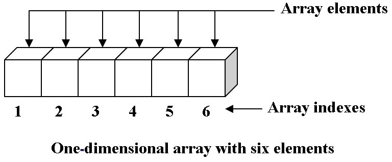
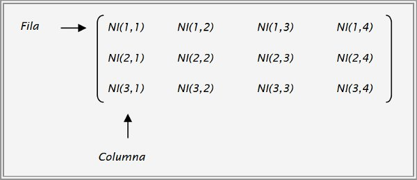

Empezaremos con las estructuras fundamentales de datos las cuales como se dice son fundamentales ya que de esas mismas surge todas las demás estructuras de datos por lo que es importante primero saber cuales son estas estructuras de datos para poder ir a algo más avanzado por lo que comenzaremos con una de las mas importantes y principales que si eres programador sabrás que es de las más usadas.
El arreglo tiene una propiedad la cual el índice inicia desde cero por lo que al momento de querer tomar el valor de la posición 5 en el arreglo sería el 4 esto es muy importante tomarlo en cuenta ya que al tomar un valor y mostrarlo se necesita el índice tomando en cuenta que inicia en 0.
Otro punto a tener en cuenta es que este tipo de arreglos se les conoce como unidimensionales los cuales tienen una característica que en este caso solo es lineal mientras que los bidimensionales tienen dos o más dimensiones.

Los arreglos bidimensionales son una colección homogénea, finita y ordenada de datos, esta hace referencia a cada uno de los componentes del arreglo por medio de dos índices.
Por lo cual explicado sería el primer arreglo indica el renglón y el segundo para señalar la columna.
También un arreglo bidimensional se puede definir como el arreglo de los arreglos.
Como se puede ver el arreglo bidimensional tiene M renglones y N columnas, A [ I, J], internamente en memoria se localizan como M X N posiciones consecutivas para almacenar.

Los arreglos bidimensionales se declaran en el momento en que se especifican el número de renglones y el número de columnas, asignándole el tipo de dato de los componentes
Id_arreglo=arreglo[liminferior, limsuperior, liminferior, limsuperior]
Al igual que en el caso del arreglo unidimensional, los índices pueden ser de cualquier tipo (escalar, entero, carácter).
Operaciones que se pueden realizar con arreglos bidimensionales
Lectura y escritura.
Moquer Company v0.1